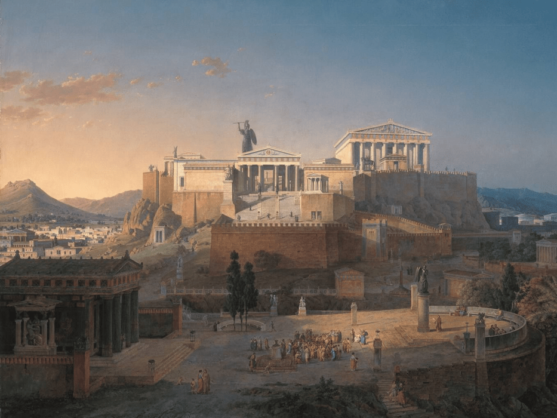
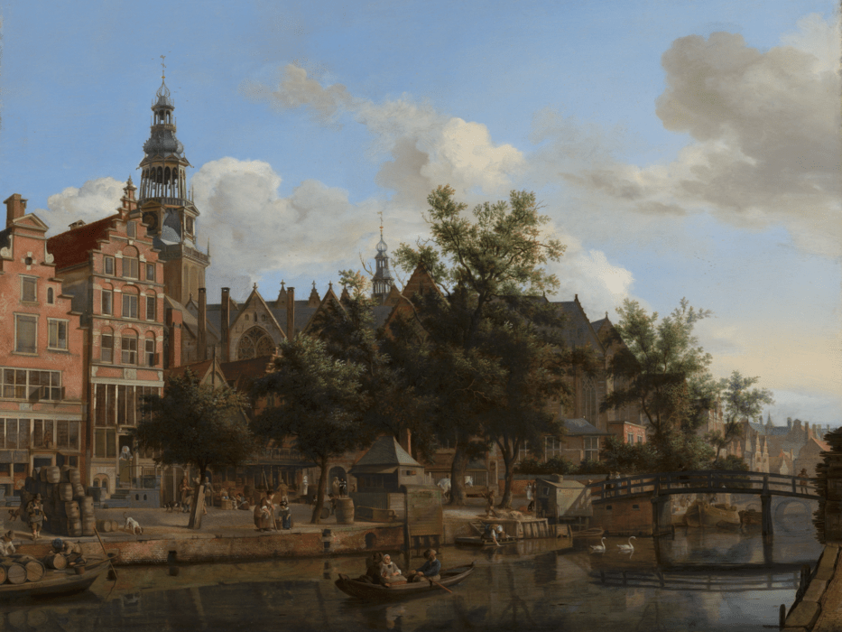
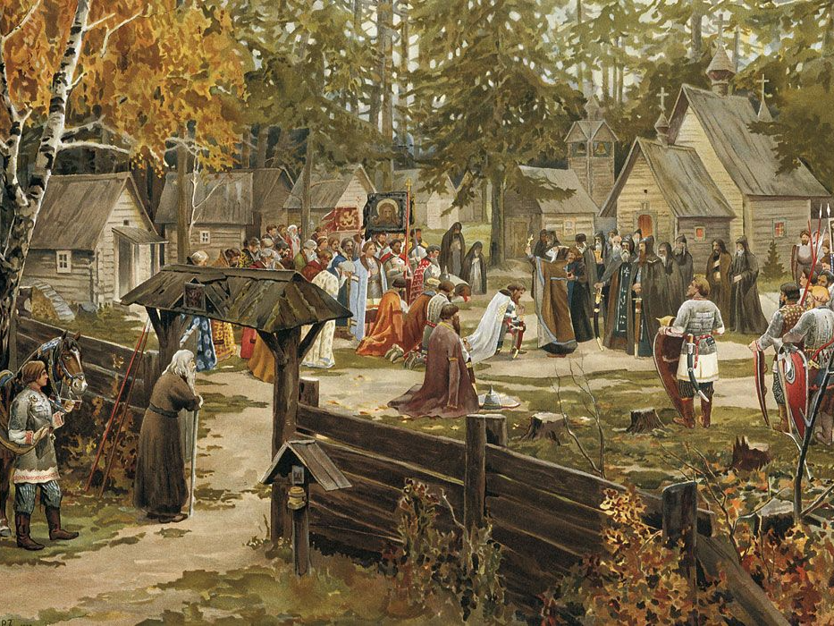

Athene, Griekenland - 345 V.Chr
Stap terug in de tijd naar het epische tijdperk van oude Griekenland en ontdek de wieg van de
westerse beschaving in het
hart van Athene. Hier, in een periode van ongeëvenaarde intellectuele bloei en culturele pracht,
wacht een onvergetelijk
avontuur op je.
Dwaal door de smalle straatjes van de oude stad en laat je betoveren door de majestueuze zuilen
van de Akropolis, een
meesterwerk van architectuur en het symbool van de oude Griekse beschaving. Bewonder de werken
van legendarische
filosofen zoals Plato en Aristoteles en ervaar de geest van intellectuele revolutie die de
wereld heeft gevormd. Proef de smaken van de oudheid, van olijven en druiven tot heerlijke
gerechten en wijn. Het is een reis die je terugvoert naar
een tijd van wijsheid, schoonheid
en verwondering.
Link

Amsterdam, Nederland - 1687
Amsterdam tijdens de Gouden Eeuw is een reis terug in de tijd naar een periode van welvaart en
verlichting. Een tijdperk waarin de stad schitterde als nooit tevoren en waar kunst, rijkdom en
avontuur samensmolten tot een unieke
ervaring. Wandel door de geplaveide straten en voel de geschiedenis tot leven komen terwijl je
de prachtige grachtenpanden en
indrukwekkende architectuur bewondert die de rijkdom van die tijd weerspiegelen. Geniet van de
rijke aroma's van specerijen uit verre landen in de bruisende markten en
ontdek de geheimen van de
Nederlandse handel en innovatie die de wereld hebben veranderd. Mis deze
unieke kans niet om te ervaren hoe het was om in een van de meest bruisende en cultureel rijke
steden van de 17e eeuw te
leven.
Link

Essex, Engeland - 1429
Stel je voor dat je een magische poort kunt oversteken en terug in de tijd kunt reizen naar een
betoverende wereld vol
ridders, kastelen en eeuwenoude legendes. Dat is precies wat je te wachten staat als je het
avontuur aangaat om het
middeleeuwse Engeland te ontdekken. Bewonder majestueuze kastelen die ooit het toneel waren van
koninklijke
intriges en ridderlijke
toernooien.
Ontmoet de kleurrijke personages uit de middeleeuwen, van troubadours tot hofnarren, en laat je
betoveren door hun
verhalen en muziek. Tijdens je reis door middeleeuws Engeland zul je niet alleen getuige zijn
van historische evenementen, maar ook deel
uitmaken van de rijke culturele erfenis van dit tijdperk. Het is een kans om de middeleeuwen op
een unieke en meeslepende manier te
ervaren.
Link